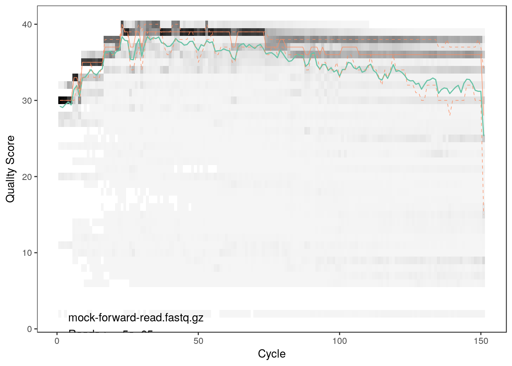
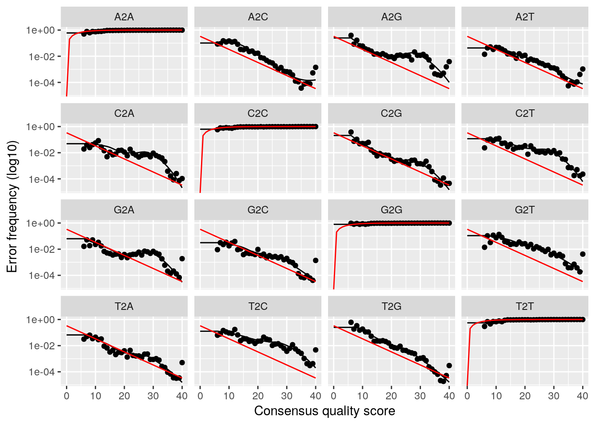
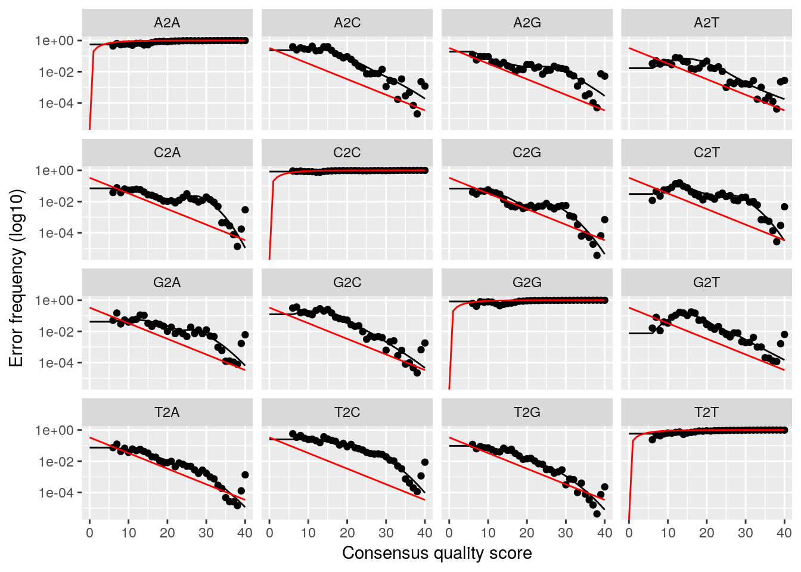
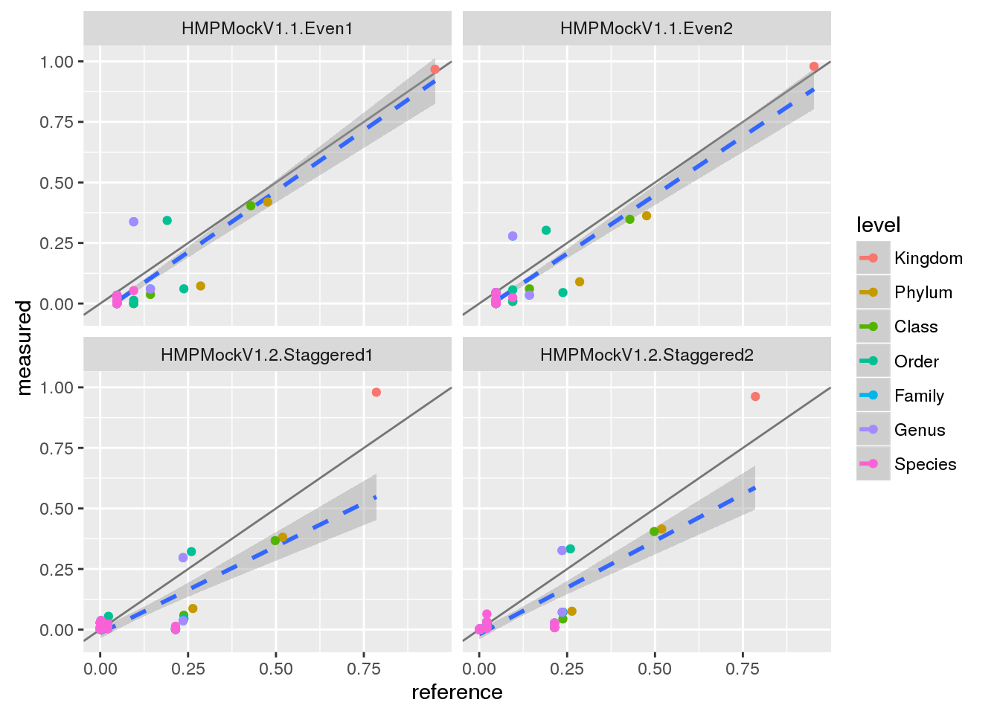
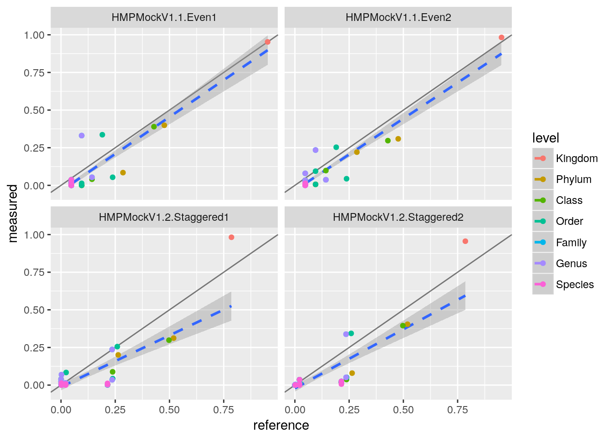

Mock community example
Christian Diener
For installtion instructions please see https://github.com/cdiener/microbiome. We recommend using the docker image in the cloud or locally as this ensures that all requirements are fulfilled in the correct version.
Loading dependencies
In order to facilitate use of the pipeline we provide the mbtools R package in this repository which serves two major purposes:
- It implements additional helper functions for the analysis and benchmarking of microbial community data.
- It depends on all additional packages required for analysis and load them upon import.
So loading mbtools should be the first step when running the analysis
library(mbtools)Getting the mock community data
mbtools includes helper functions to obtain benchmark mock data sets from the mockrobiota database. For instance to download the mock-3 data set (relatively small) we can use
if (!file.exists("mock3.rds")) {
mock <- mockrobiota("mock-3", "mock3")
saveRDS(mock, "mock3.rds")
} else mock <- readRDS("mock3.rds")Here mock now includes annotations for the data set as a list.
names(mock)## [1] "description" "forward" "reverse" "index" "citation"
## [6] "fragment" "equipment" "samples" "ps_gg" "ps_silva"mock$samples## SampleID BarcodeSequence
## HMPMockV1.1.Even1 HMPMockV1.1.Even1 TGTACGGATAAC
## HMPMockV1.1.Even2 HMPMockV1.1.Even2 CAAATGGTCGTC
## HMPMockV1.2.Staggered1 HMPMockV1.2.Staggered1 AATCAACTAGGC
## HMPMockV1.2.Staggered2 HMPMockV1.2.Staggered2 ACACATAAGTCG
## LinkerPrimerSequence ReversePrimer
## HMPMockV1.1.Even1 GTGCCAGCMGCCGCGGTAA GGACTACHVGGGTWTCTAAT
## HMPMockV1.1.Even2 GTGCCAGCMGCCGCGGTAA GGACTACHVGGGTWTCTAAT
## HMPMockV1.2.Staggered1 GTGCCAGCMGCCGCGGTAA GGACTACHVGGGTWTCTAAT
## HMPMockV1.2.Staggered2 GTGCCAGCMGCCGCGGTAA GGACTACHVGGGTWTCTAAT
## PrimerName Description
## HMPMockV1.1.Even1 515f-806r Nenehozi
## HMPMockV1.1.Even2 515f-806r Tofekoca
## HMPMockV1.2.Staggered1 515f-806r Kalofiyo
## HMPMockV1.2.Staggered2 515f-806r PewizifoPreparing the reads
As we can see we have 3 read files, the forward and backward reads and one index file mapping the sample barcodes to the sequences. However, we have 4 samples: a uniform and staggered community in duplicates each. In order to map sequence variants to samples dada2 expects read files to be separated by sample. mbtools includes helper functions to obtain this splitting.
reads <- c(mock$forward, mock$reverse)
barcodes <- mock$samples$BarcodeSequence
names(barcodes) <- mock$samples[,1]
bcs <- split_barcodes(reads, mock$index, "split", barcodes)
fwd <- list.files("split", pattern="forward", full.names=T)
bwd <- list.files("split", pattern="reverse", full.names=T)
fwd## [1] "split/HMPMockV1.1.Even1_mock-forward-read.fastq.gz"
## [2] "split/HMPMockV1.1.Even2_mock-forward-read.fastq.gz"
## [3] "split/HMPMockV1.2.Staggered1_mock-forward-read.fastq.gz"
## [4] "split/HMPMockV1.2.Staggered2_mock-forward-read.fastq.gz"As we see that now gives us the reads separated by sample. The orginal read still include some valid information, particularly they include the read qualities across all samples.
plotQualityProfile(reads[1])
plotQualityProfile(reads[2])
As we can see both qualities detoriate extremely with read lengths. Thus, we will have to trim the reads. From the plots we can see that the forward reads have decent quality up to a length of 150 bp whereas the reverse reads are acceptable up to 100 bp.
dir.create("filtered")## Warning in dir.create("filtered"): 'filtered' already existsfwd_filt <- file.path("filtered", basename(fwd))
bwd_filt <- file.path("filtered", basename(bwd))
for (i in seq_along(fwd)) {
fastqPairedFilter(c(fwd[i], bwd[i]), c(fwd_filt[i], bwd_filt[i]),
truncLen=c(150, 100), compress=T, verbose=T)
}## Overwriting file:filtered/HMPMockV1.1.Even1_mock-forward-read.fastq.gz## Overwriting file:filtered/HMPMockV1.1.Even1_mock-reverse-read.fastq.gz## Read in 10536 paired-sequences, output 8792 filtered paired-sequences.## Overwriting file:filtered/HMPMockV1.1.Even2_mock-forward-read.fastq.gz## Overwriting file:filtered/HMPMockV1.1.Even2_mock-reverse-read.fastq.gz## Read in 13000 paired-sequences, output 10147 filtered paired-sequences.## Overwriting file:filtered/HMPMockV1.2.Staggered1_mock-forward-read.fastq.gz## Overwriting file:filtered/HMPMockV1.2.Staggered1_mock-reverse-read.fastq.gz## Read in 23463 paired-sequences, output 19012 filtered paired-sequences.## Overwriting file:filtered/HMPMockV1.2.Staggered2_mock-forward-read.fastq.gz## Overwriting file:filtered/HMPMockV1.2.Staggered2_mock-reverse-read.fastq.gz## Read in 8980 paired-sequences, output 7263 filtered paired-sequences.We will follow by dereplicating the reads which will yield the unique sequences in the samples.
derepFs <- derepFastq(fwd_filt, verbose=TRUE)## Dereplicating sequence entries in Fastq file: filtered/HMPMockV1.1.Even1_mock-forward-read.fastq.gz## Encountered 1302 unique sequences from 8792 total sequences read.## Dereplicating sequence entries in Fastq file: filtered/HMPMockV1.1.Even2_mock-forward-read.fastq.gz## Encountered 1644 unique sequences from 10147 total sequences read.## Dereplicating sequence entries in Fastq file: filtered/HMPMockV1.2.Staggered1_mock-forward-read.fastq.gz## Encountered 2597 unique sequences from 19012 total sequences read.## Dereplicating sequence entries in Fastq file: filtered/HMPMockV1.2.Staggered2_mock-forward-read.fastq.gz## Encountered 1126 unique sequences from 7263 total sequences read.derepRs <- derepFastq(bwd_filt, verbose=TRUE)## Dereplicating sequence entries in Fastq file: filtered/HMPMockV1.1.Even1_mock-reverse-read.fastq.gz## Encountered 1681 unique sequences from 8792 total sequences read.## Dereplicating sequence entries in Fastq file: filtered/HMPMockV1.1.Even2_mock-reverse-read.fastq.gz## Encountered 2268 unique sequences from 10147 total sequences read.## Dereplicating sequence entries in Fastq file: filtered/HMPMockV1.2.Staggered1_mock-reverse-read.fastq.gz## Encountered 3176 unique sequences from 19012 total sequences read.## Dereplicating sequence entries in Fastq file: filtered/HMPMockV1.2.Staggered2_mock-reverse-read.fastq.gz## Encountered 1517 unique sequences from 7263 total sequences read.# Name the derep-class objects by the sample names
names(derepFs) <- names(derepRs) <- names(barcodes)Obtaining the sequence variants (sequence OTUs)
With the trimmed and dereplicated reads we can now advance to running the dada2 algorithm to discover the unqiue sequence variants in our reads. We will do this separately for the forward and backward reads.
dadaFs <- dada(derepFs, err=NULL, selfConsist = TRUE)## Initial error matrix unspecified. Error rates will be initialized to the maximum possible estimate from this data.## Initializing error rates to maximum possible estimate.
## Sample 1 - 8792 reads in 1302 unique sequences.
## Sample 2 - 10147 reads in 1644 unique sequences.
## Sample 3 - 19012 reads in 2597 unique sequences.
## Sample 4 - 7263 reads in 1126 unique sequences.
## selfConsist step 2
## selfConsist step 3
## selfConsist step 4
##
##
## Convergence after 4 rounds.dadaRs <- dada(derepRs, err=NULL, selfConsist = TRUE)## Initial error matrix unspecified. Error rates will be initialized to the maximum possible estimate from this data.## Initializing error rates to maximum possible estimate.
## Sample 1 - 8792 reads in 1681 unique sequences.
## Sample 2 - 10147 reads in 2268 unique sequences.
## Sample 3 - 19012 reads in 3176 unique sequences.
## Sample 4 - 7263 reads in 1517 unique sequences.
## selfConsist step 2
## selfConsist step 3
## selfConsist step 4
##
##
## Convergence after 4 rounds.This will fit an error model that deconvolutes the original sequence variants in the sample. We can investigate how well the error model reproduces our data as well.
plotErrors(dadaFs, nominalQ=TRUE)
plotErrors(dadaRs, nominalQ=TRUE)
We will now quantify the sequence variants for both samples and combine them. Normally we would try to actually combine the forward and backwards reads into larger reads and quantify those, however our read qualities were so bad in this data set that there is no sufficient overlap. Thus, we will treat the forward and backward reads independently.
seqtab <- cbind(
makeSequenceTable(dadaFs),
makeSequenceTable(dadaRs))Finally, we will also remove bimeras (reads that are combinations of two other reads) from the data set.
seqtab_nochim <- removeBimeraDenovo(seqtab, verbose=TRUE)## Identified 6 bimeras out of 48 input sequences.Taxonomy assignment and validation
In order to classify taxonomies for the individual sequence variants we will use the RDP algorithm with the green genes reference sequences. If you do not use the docker image this data set has to be downloaded first from here.
file.exists("gg_13_8_train_set_97.fa.gz")## [1] TRUEAxonomies can now be assigned by
taxa <- assignTaxonomy(seqtab_nochim, "gg_13_8_train_set_97.fa.gz")
colnames(taxa) <- c("Kingdom", "Phylum", "Class", "Order", "Family", "Genus", "Species")
head(unname(taxa))## [,1] [,2] [,3]
## [1,] "k__Bacteria" "p__Firmicutes" "c__Bacilli"
## [2,] "k__Bacteria" "p__Firmicutes" "c__Bacilli"
## [3,] "k__Bacteria" "p__Proteobacteria" "c__Gammaproteobacteria"
## [4,] "k__Bacteria" "p__[Thermi]" "c__Deinococci"
## [5,] "k__Bacteria" "p__Proteobacteria" "c__Gammaproteobacteria"
## [6,] "k__Bacteria" "p__Proteobacteria" "c__Alphaproteobacteria"
## [,4] [,5] [,6]
## [1,] "o__Bacillales" "f__Staphylococcaceae" "g__Staphylococcus"
## [2,] "o__Lactobacillales" "f__Streptococcaceae" "g__Streptococcus"
## [3,] "o__Pseudomonadales" "f__Moraxellaceae" "g__Acinetobacter"
## [4,] "o__Deinococcales" "f__Deinococcaceae" "g__Deinococcus"
## [5,] "o__Pseudomonadales" "f__Pseudomonadaceae" "g__Pseudomonas"
## [6,] "o__Rhodobacterales" "f__Rhodobacteraceae" "g__Rhodobacter"
## [,7]
## [1,] "s__"
## [2,] "s__"
## [3,] "s__"
## [4,] "s__"
## [5,] "s__"
## [6,] "s__sphaeroides"This can be combined with quantifications using the phyloseq package.
ps <- phyloseq(otu_table(seqtab_nochim, taxa_are_rows=FALSE),
tax_table(taxa))We can now compare this table to our reference table from mockrobiota. We will start by quantifying how many of the real taxa were found in our taxonomy assignment.
taxa_metrics(tax_table(ps), tax_table(mock$ps_gg))## level found n
## 1 Kingdom 1.0 2
## 2 Phylum 1.0 6
## 3 Class 1.0 10
## 4 Order 1.0 12
## 5 Family 1.0 18
## 6 Genus 1.0 18
## 7 Species 0.7 20As we can see we are pretty good in identifying the taxa in our samples. However, how do we perform in terms of taxa quantities? We will start by stratifying across the samples:
tq <- taxa_quants(ps, mock$ps_gg, normalize = TRUE)
head(tq)## level name sample measured reference
## 1 Kingdom k__Bacteria HMPMockV1.1.Even1 0.9673857362 0.95238095
## 2 Kingdom k__Archaea HMPMockV1.1.Even1 0.0076270704 0.04761905
## 3 Kingdom k__Bacteria HMPMockV1.1.Even2 0.9793970611 0.95238095
## 4 Kingdom k__Archaea HMPMockV1.1.Even2 0.0007574610 0.04761905
## 5 Kingdom k__Bacteria HMPMockV1.2.Staggered1 0.9798592835 0.78563773
## 6 Kingdom k__Archaea HMPMockV1.2.Staggered1 0.0005370858 0.21436227taxa_quants already quantifies across a possible levels of taxonomy. So we can plot the performance stratified by sample with
ggplot(tq, aes(x=reference, y=measured, col=level)) +
geom_abline(alpha=0.5) +
geom_smooth(aes(group=1), method="lm", lty="dashed") +
geom_point() +
facet_wrap(~ sample)
This plot is so common that it is also implemented in mbtools as mock_plot.
Additionally, we can also combine all samples and rather stratify by taxonomy level.
ggplot(tq, aes(x=reference, y=measured, col=sample)) +
geom_abline(alpha=0.5) +
geom_smooth(aes(group=1), method="lm", lty="dashed") +
geom_point() +
theme(legend.position="bottom") +
facet_wrap(~ level, scale="free")
This looks pretty ok with larger variations on the species level, which is to be expected. We can quantify the performance by a correlation test.
cor.test(tq$measured, tq$reference)##
## Pearson's product-moment correlation
##
## data: tq$measured and tq$reference
## t = 28.365, df = 318, p-value < 2.2e-16
## alternative hypothesis: true correlation is not equal to 0
## 95 percent confidence interval:
## 0.8123629 0.8750184
## sample estimates:
## cor
## 0.8465985So we get a correlation of about 0.85 which is okay for the bad quality reads we used here.